Game Monitoring Tool definitivo para Android. Acompanhe a taxa de quadros (FPS), frequência e consumo da CPU/GPU, VRAM, temperaturas e gerencie perfis de performance durante as suas partidas.
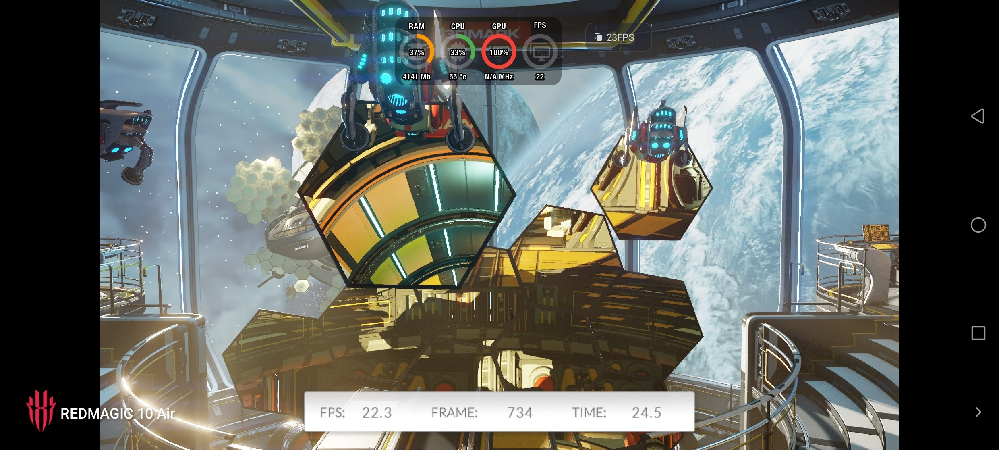
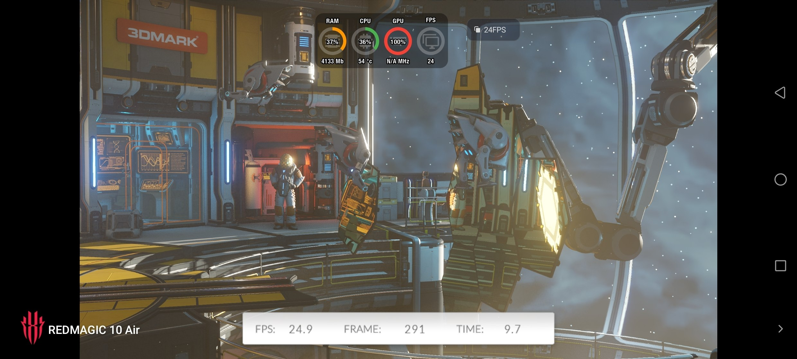
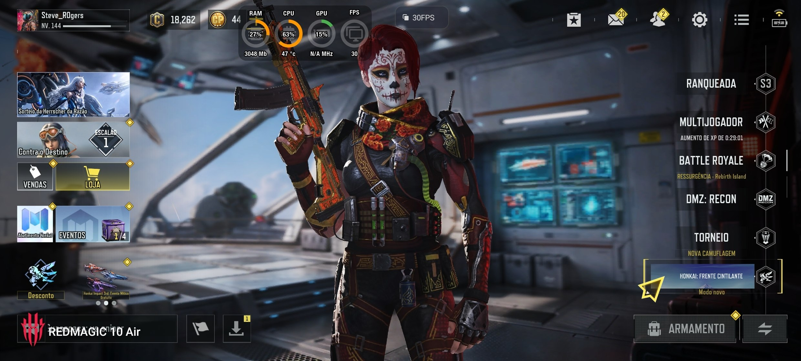
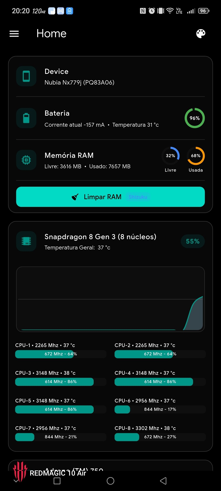
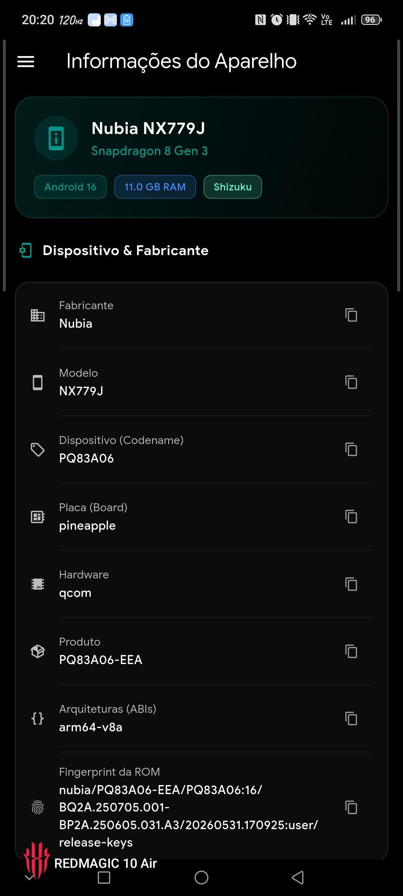
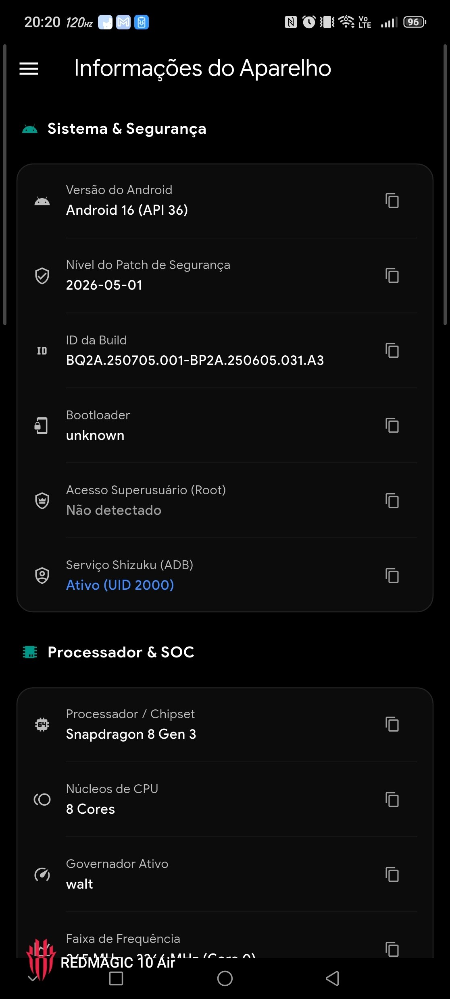
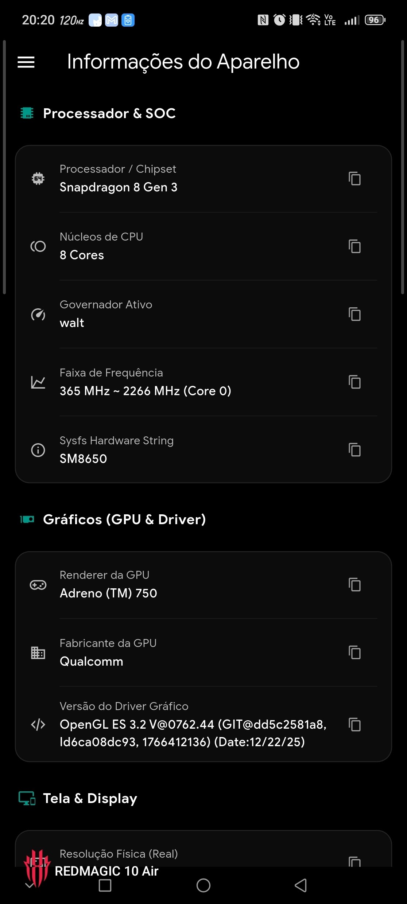
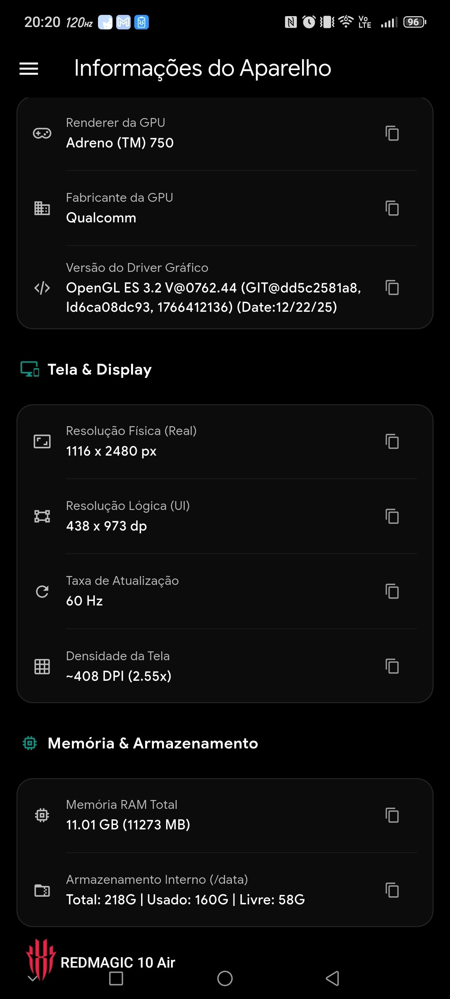
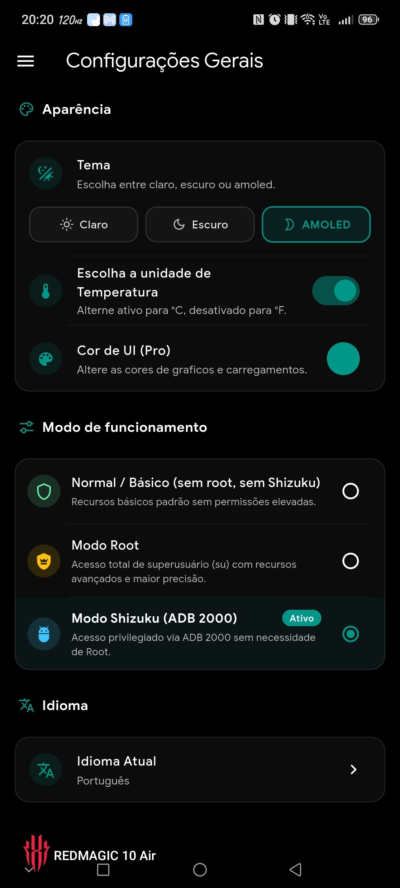
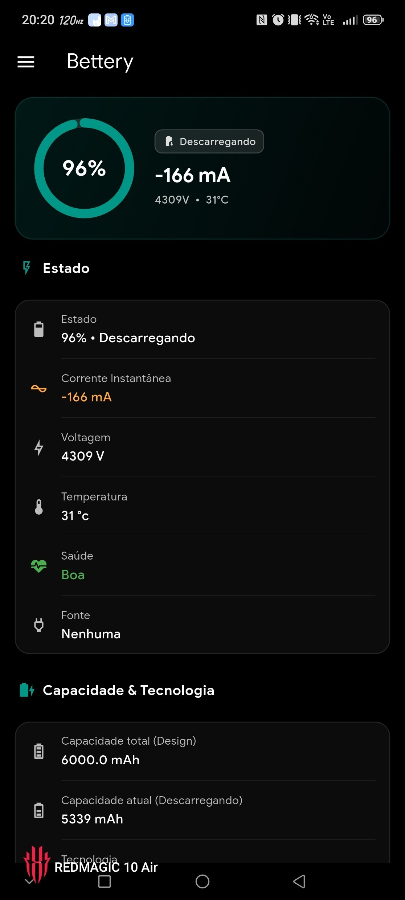
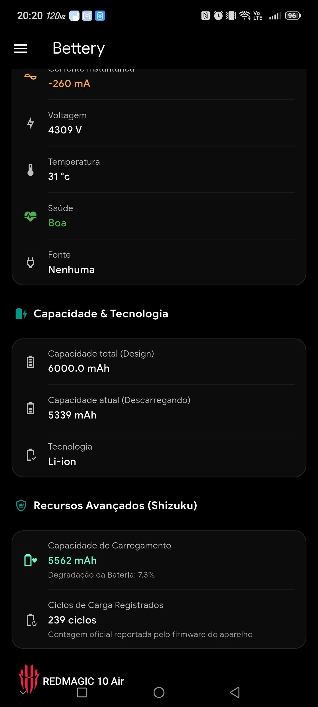
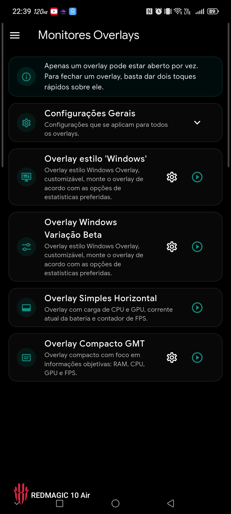
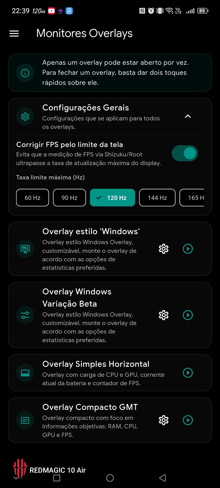
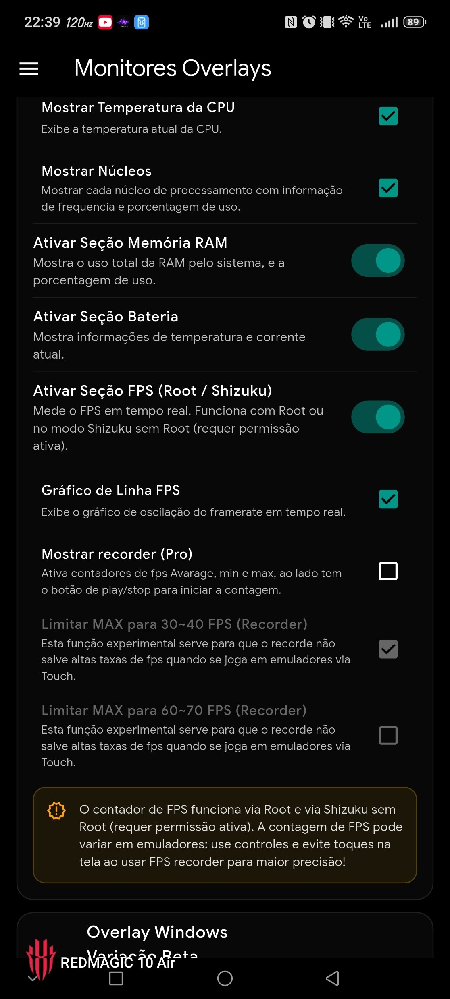
O Gamer Tool (GT) foi desenvolvido especialmente para jogadores, entusiastas de hardware e técnicos que buscam extrair o máximo potencial gráfico e estabilidade em seus dispositivos Android.
Com uma interface moderna, ágil e focada em métricas precisas, o aplicativo oferece telemetria profunda com janelas flutuantes (*overlays*) customizáveis que mostram dados em tempo real sobre qualquer jogo em execução.